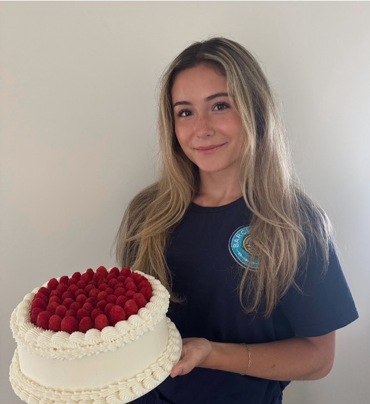

Celebrating children one birthday cake at a time.
Cakes & Candles Project is a volunteer-powered program that provides free birthday cakes for children in foster care, homeless shelters, women’s shelters, family housing programs, and residential youth services across Oakland County.
To make sure children feel celebrated, seen, and cared for on their birthday.
A birthday cake may seem small, but for a child living in foster care, a shelter, or transitional housing, it can be a meaningful reminder that they matter. Cakes & Candles Project exists to make those moments happen with care, consistency, and community support.
Who we serve
Children in foster care, homeless shelters, women’s shelters, family housing programs, and residential youth services.
Where we serve
Currently focused on Oakland County, with the goal of building strong local partnerships first.
How it works
Birthday cake requests are submitted by staff and coordinated directly for pickup or delivery.
Request a birthday cake for a child you serve.
If you are a staff member, caseworker, or approved program contact, you can request a birthday cake for a child in your care. Requests should ideally be submitted at least 1 to 2 weeks in advance.
Suggested request details
- Child’s first name or initials
- Age turning
- Date needed
- Allergies or restrictions
- Preferred colors or simple theme
- Best staff contact for coordination
Request form
Volunteers make every birthday possible.
From baking cakes to donating supplies to helping coordinate deliveries, volunteers are at the heart of this project. There are simple ways to get involved and make a child’s birthday feel special.
Bake
Volunteer bakers can help fulfill birthday cake requests as the project grows.

Donate supplies
Support can include cake boards, boxes, ingredients, frosting tools, toppers, and other simple baking essentials.

Help behind the scenes
Volunteers may also be needed for outreach, coordination, and helping manage requests over time.
Interested in volunteering?
We would truly love your help and support. If you're willing to be part of this mission, please fill out the form below and we will reach out to you shortly.
Who can help
Anyone local to Oakland County who wants to support children and make birthdays feel meaningful.
Choose a birthday request to help with.
Thank you so much for helping with Cakes & Candles Project. Below are the current birthday requests and volunteer needs. Please choose a spot only if it feels manageable for your schedule. After you sign up, Julia will follow up by email to confirm the details.
We welcome partnerships with programs serving children and families.
If your organization serves children in foster care, shelters, housing programs, or similar residential settings, we would love to connect about how birthday cake requests could work for your program.
Partnership contact
Email CakesAndCandlesProject@gmail.com to talk about referrals, request systems, or how this can best support the children in your care.
What partnership can look like
A simple request process, one reliable contact person, and birthday cake requests submitted as children’s birthdays come up.

Meet the person behind Cakes & Candles Project.
Cakes & Candles Project was started by Julia Fidler, a student at Oakland University who has always loved baking and being involved in her community.
After spending time volunteering with local nonprofits, she realized that something as simple as a birthday cake can mean much more for children who may not always get to celebrate in the same way. That idea turned into Cakes & Candles Project, with the goal of making birthdays feel a little more special.